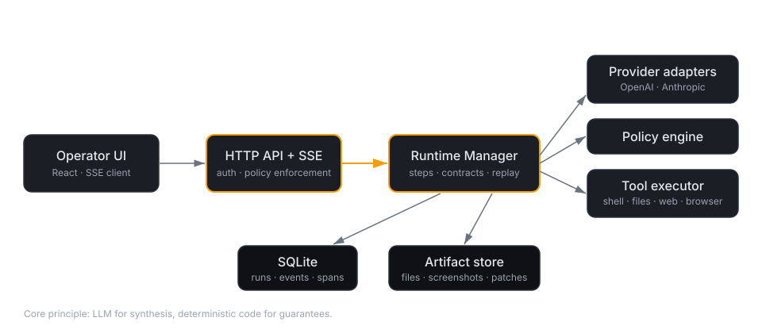

Builder at heart, I spend my evenings building human-centered tools that help people
work a little faster, safer, and with less friction.
side quests
Building ISPs, agent harnesses, voice agents and interfaces, social assistance bots, cryptanalysis.
day job lens
Healthcare infrastructure teaches you quickly: useful automation still needs trust boundaries.
today
No AI magic dust. Just agents, authority, blast radius, evidence, and control.
AI generated content. Agents exercise capability.
The security boundary moved from content to capability.
The question isn't whether agents will be in your environment.
It's whose agents, on whose terms.
Agents are non-deterministic code with credentials.
old assumption
Static review, CI gates, policy-as-code, and audit trails all assume the program is fixed before it runs.
agent reality
An agent decides at runtime which tool to call, with what arguments, in what order.
It holds your tokens. It reads your docs. It can be talked into things.
You didn't ship an application. You shipped a process with judgment.
If agents are digital employees, govern them like employees.
Give every agent an operating model before you give it access.
identity
Who is this agent? What team owns it? What systems does it represent?
permissions
What can it read, change, delete, approve, or escalate?
supervision
When does it need a manager? What actions require review before execution?
training
Which policies, playbooks, data, and examples shape its behavior?
audit
Can we reconstruct every decision and every action after the fact?
offboarding
Can we revoke its access everywhere when the workflow changes?
Humans can’t supervise at agent speed.
human review loop
1×
Read the log. Interpret the action. Decide whether it was safe.
vs
agent execution loop
10,000×
Plan, call tools, observe results, adapt, repeat.
speed faster than observationopacity inside model callsnovelty beyond old playbooks
This is not a training problem. It is an architecture problem.
Three failure modes keep recurring.
Prompt injection
Data the agent reads becomes instructions it follows.
Dangerous because trusted tools are attached.
Tool overreach
The agent takes an action it was allowed to take, but never should have.
Opaque execution
After the run, nobody can reconstruct what actually happened.
The bad answers all share the same flaw: they react after trust was already granted.
the trap
Make the workflow faster, but leave the authority model unchanged.
01
Trust the SDK. Hope the prompt is strong enough.
02
Mock the sandbox. Hide the risk in a perfect demo.
03
DIY the harness. Rebuild controls differently on every team.
04
Add an AI watcher. Notice the failure slightly sooner.
A faster detector is not a control.
The failure is not that the model was weird. The runtime had no boundaries.
A support agent reads a customer ticket.
Hostile instructions hide in normal text.
The agent calls an internal billing tool.
It exports account data because the tool allowed it.
The logs show API calls, but not the decision path.
Real defense is architecture, not automation.
Colosseum — an agent control plane
Open source. Single Go binary. SQLite-backed. Embedded operator UI.
identity
Agent profiles with bound models, configs, credentials.
least privilege
Per-agent tool allowlists and scoped credential vaults.
audit
Every run, step, tool call, event, and artifact persisted.
review
Policy gates, human approvals, output contracts.
replay
Reproduce any past run. Bundle it for forensics.
one binary
No cluster, no queue broker, no vendor lock-in.
LLM for synthesis. Deterministic code for guarantees.
Let the model do what only it can do — reason, summarize, suggest.
Keep enforcement, gating, and audit in code you can read.
If a property has to hold every time — compliance, cost, blast radius —
it doesn't belong in a prompt. And it doesn't belong in a detector either.
Every control in Colosseum is proactive: defined, versioned, and enforced
before the agent takes a step — not inferred from its exhaust afterwards.
Architecture

A single Go process. The UI, API, scheduler, and policy engine all live in the same binary.
SQLite holds the graph of runs · steps · tool calls · events · spans.
Agent profiles — scoped identity
An agent is a named identity: model + system prompt + bound provider config + tool allowlist + credential binding.
name: support-triage-bot
model: claude-sonnet-4-6
provider_config: anthropic-prod
system_prompt: |
You are a support triage agent. You may read Zendesk and
the internal KB. You may not write to either.
allowed_tools: [web.fetch, files.read, json.parse]
credential_vault: zendesk-readonly
planning_mode: required
output_contract: schemas/triage-v1.json
One YAML file. One reviewable artifact. Version-controlled like any other deploy.
Tool allowlist — least privilege, per agent
Tools are named, versioned, parameter-typed functions. The agent sees only what its profile allows.
shell.exec — with per-agent cwd, env, timeout
files.read · files.write
web.fetch · browser.navigate
http.request — with URL allowlist
subagent.invoke — explicit agent-calls-agent
counter to
Tool overreach. If a tool is not in the allowlist, it is not callable — enforced in the step loop, not in the prompt.
Credential vaults — scoped secrets, bound per agent
Named vaults hold secrets. Agents reference vaults; they never see raw values.
Injected into tool calls at the last possible moment. Redacted from logs and UI by default.
Environments — Docker-first sandboxes
Every run can be pinned to an environment spec: base image, volume mounts, network policy, resource limits.
Default shell runs inside a named image
Filesystem writes bounded to the session workspace
Egress controlled by the host network policy
Session lifetime bounded — no zombie containers
counter to
"It ran rm -rf on my laptop." Blast radius is whatever the container can reach — nothing more.
Policy & approvals — the human gate
Deterministic predicates run before risky tool calls. They can allow, deny, or request human approval.
// Example: require approval for any shell.exec that writes outside the sandbox
policy.Rule{
Tool: "shell.exec",
Match: func(a Args) bool { return writesOutside(a.Cwd, a.Cmd) },
Action: policy.RequireApproval,
}
The agent pauses, a notification goes to the UI, a human approves or rejects — with a reason, captured in the audit log.
Output contracts — "looks good" isn't good enough
Agents can be required to emit output matching a schema or regex before the run is accepted.
JSON Schema validation
Regex / format constraints
Retries with feedback on validation failure
Contract violations are a terminal error, not a warning
counter to
"The answer looked right, but it was wrong." The contract turns a qualitative check into a deterministic one.
Planning mode — force a reviewable plan
Three modes, per agent:
off
Straight to execution. Fine for bounded, low-risk agents.
suggest
Agent proposes a plan; may execute without approval.
required
Agent proposes a plan; human approves before any tool call.
The plan is stored with the run. You can replay the run and show that the plan was followed.
Telemetry — the run is the evidence
Every run produces a structured graph:
Runs — the outermost unit, one per invocation
Steps — planner / tool / observation cycles
Tool calls — args, results, errors, latency
Events — everything the runtime observed
Spans — OpenTelemetry-compatible traces
Artifacts — files, screenshots, patches
counter to
"I can't prove what the agent did." You can. It's in SQLite. It's queryable. It's exportable.
Replay & export — reproducible forensics
Any past run can be replayed with the same inputs, tools mocked from the recorded results — or re-executed live with changed policy.
# Export a run as a self-contained bundle
colosseum export run-0f8c... > incident-2026-04-17.tar.gz
# Replay against the original tool recordings
colosseum replay run-0f8c...
# Re-execute with a tightened allowlist to prove the fix
colosseum replay run-0f8c... --override-agent hardened-triage
The export bundle is your incident write-up's attachment.
checking…|demo target:
Confident deployment
Moving an agent from lab to prod today requires either blind faith or a bespoke harness. Colosseum is the harness.
Evals tell you how often the agent is right.
Runtime controls tell you what happens when it's wrong.
Both matter. Production requires the second one.
Incident response, rebuilt for agents
When an agent misbehaves, you need answers in minutes, not days.
What did it do? — full step + tool-call graph, timestamped
Who authorized it? — plan approval + tool approval log
Can it happen again? — replay with a tightened policy to prove the fix
Who else is affected? — query runs by agent, by tool, by credential vault
The execution graph is the audit trail.
Platform leverage
One shared control plane beats N bespoke agent harnesses.
Security defines the policy library once
Platform defines the tool catalog once
Product teams author agent profiles on top
Compliance gets the audit trail for free
Cost of a new internal agent:
Define profile
1 YAML
Wire secrets
reference a vault
Add tools
pick from catalog
Audit setup
0 — inherited
Colosseum vs. "just the SDK"
Raw SDK
Hosted agent product
Colosseum
Tool allowlist per agent
—
partial
yes
Scoped credential vaults
env vars
vendor
yes
Human-in-loop approvals
DIY
limited
yes
Output contracts
DIY
partial
yes
Full telemetry & replay
—
vendor-locked
yes
Runs on your infra
yes
—
yes
Single binary, no cluster
yes
—
yes
Open source — all the way down
MIT licensed. Use it, fork it, audit it.
Single Go binary + SQLite.
Embedded UI — one process, one port.
Bring your own provider (OpenAI, Anthropic, local models).
Bring your own tools — the executor is pluggable.
ship in 5 minutes
go install github.com/anthropics/colosseum/cmd/colosseum@latest
colosseum server --port 8001
open http://localhost:8001
What's next
scale
Distributed scheduler — runs spread across workers, shared Postgres-backed store.
multi-tenant
Per-team namespaces, per-role RBAC, isolation of secrets + audit trails.
policy
Richer policy expressions, OPA interop, prompt-injection classifiers as first-class gates.